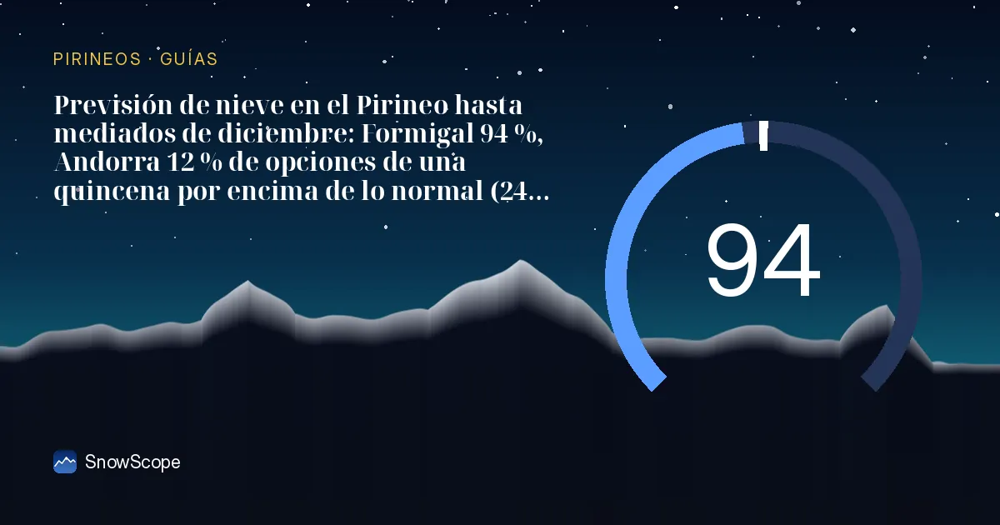
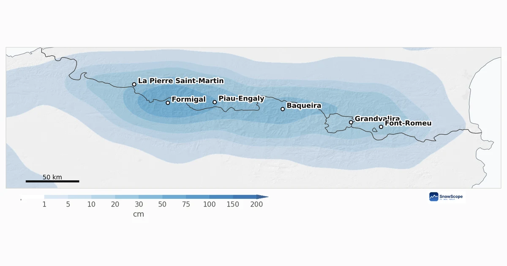
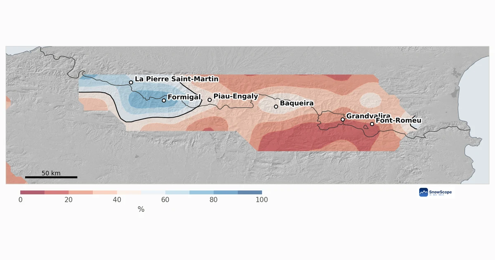
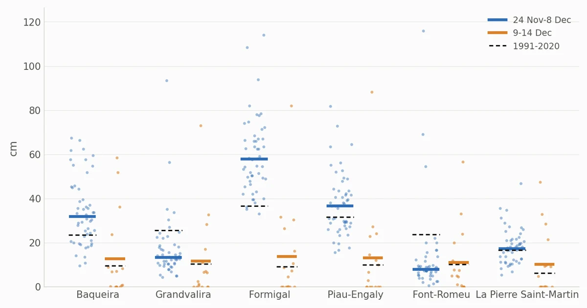

Previsión de nieve en el Pirineo hasta mediados de diciembre: Formigal 94 %, Andorra 12 % de opciones de una quincena por encima de lo normal (24 de noviembre de 2026)
El Pirineo se divide en dos para la próxima quincena. El conjunto ECMWF del 24 de noviembre (50 miembros) da a Formigal una mediana de 57,9 cm de nieve nueva hasta el 8 de diciembre, frente a una normal 1991-2020 de 36,5 cm, con el 94 % de los miembros por encima de lo normal. Baqueira tiene un 72 %. Pero Grandvalira se queda en 12 % y Font-Romeu en solo 6 %. En toda la cordillera la media es de 19,1 mm de agua en forma de nieve frente a 18,3 mm: una moneda al aire, 46 %. MODIS de la NASA muestra el punto de partida: nieve en el 44 % del suelo visible por encima de 1.000 m, mayoritariamente blanco desde unos 1.500 m.
Consulta la previsión de nieve en tiempo real de Baqueira en la app SnowScopeEspesor de nieve, alertas de nieve polvo y mapa 3D, gratis.

La nieve en el suelo hoy: NASA MODIS
El Pirineo pasó casi toda la semana pasada bajo las nubes: el 16, el 17 y el 21 de noviembre MODIS no vio nada del relieve. Guardando la última vista despejada de cada píxel de 500 m entre el 16 y el 23 de noviembre, el 50 % del suelo visible se vio el 23 de noviembre, cuando el 38 % estaba despejado, y el 23 % quedó oculto toda la semana.
Por encima de 1.000 m, MODIS cuenta 6.846 km² de nieve frente a 8.659 km² de suelo sin nieve. La parte blanca pasa del 29 % entre 1.000 y 1.250 m al 50 % entre 1.500 y 1.750 m, el 65 % entre 2.000 y 2.250 m y el 81 % por encima de 2.500 m: la cota de nieve está cerca de 1.500 m. Gascoin et al. (2015) construyeron una climatología de nieve del Pirineo con los mismos productos MODIS y mostraron lo distintas que pueden ser la vertiente española y la francesa.

Del 24 de noviembre al 8 de diciembre: el conjunto ECMWF
Casi toda la nieve llega la primera semana. Medianas del 24 al 30 de noviembre: Formigal 46,6 cm, Piau-Engaly 26,1 cm, Baqueira 20,6 cm, La Pierre Saint-Martin 14 cm, Grandvalira 9 cm y Font-Romeu 5,4 cm. Del 1 al 8 de diciembre bajan a 7,6 cm en Formigal y 7,8 cm en Baqueira.
En los 15 días: Formigal mediana 57,9 cm (décimo más nevado 78,1 cm), normal 36,5 cm, 94 % por encima; Baqueira 31,7 cm, normal 23,4 cm, 72 %; Piau-Engaly 36,6 cm, normal 31,6 cm, 54 %; Grandvalira 13,3 cm, normal 25,6 cm, 12 %; Font-Romeu 7,8 cm, normal 23,7 cm, 6 %.
La fracción de nieve φ = S / P importa en el oeste. En la celda de La Pierre Saint-Martin, de altitud media 1.084 m, el 24 % de la precipitación cae como nieve; en la celda más alta de Formigal (2.002 m), el 88 %. La nieve nueva se calcula como agua de nieve por ρw / ρnueva, con ρnueva de unos 100 kg/m³ (Judson y Doesken 2000).

Del 9 al 14 de diciembre: NOAA GEFS
Para los días 16 a 21 usamos los 16 miembros completos del GEFS de la NOAA del 24 de noviembre, contando la precipitación de 6 horas solo cuando el indicador de nieve está activo (S = Σ P6h · CSNOW). En la cordillera el 44 % de los miembros supera la normal de esos seis días, media 10,6 mm frente a 8,1 mm. La Pierre Saint-Martin 44 %, Formigal y Piau-Engaly 38 %, Grandvalira 31 %. Es casi una ausencia de señal: con 16 miembros, cada uno vale unos 6 puntos (Vitart 2014).

La NAO y la nieve del Pirineo
López-Moreno y Vicente-Serrano (2007) mostraron que el manto del Pirineo español crece en los inviernos de NAO negativa, cuando las borrascas atlánticas pasan más al sur (Hurrell 1995). La previsión GEFS de la NOAA sitúa la NAO en +0,97 el 26 de noviembre y cerca de -0,29 el 4 de diciembre, con el 60 % de los días-miembro negativos a partir del día 8. La oscilación ártica baja a -1,34 el 2 de diciembre.
Esta semana los mayores totales están en Aragón, Bigorra y el Val d'Aran, mucho menos en el Pirineo oriental: la firma habitual de las borrascas atlánticas. Si la NAO se vuelve claramente negativa en diciembre, el oeste y el centro serían los primeros en beneficiarse; el este necesita otro patrón, un flujo de levante desde el golfo de León.
Cómo leer estas cifras
Cada cifra vale para una celda de 0,25°, de unos 28 por 20 km, cuya altitud media suele estar varios cientos de metros por debajo de la estación. Comparamos cada celda con su propia normal 1991-2020, así el cociente anula buena parte del efecto de la altitud. Los 50 miembros son futuros igual de probables: un 6 % son 3 miembros, poco probable pero posible.
La nieve que cae no es la nieve en el suelo: viento, sol y lluvia la mueven y la funden. Estudios como Durand et al. (2008) combinan mapas de nieve y balance de energía para reconstruir el agua de nieve real. Para los próximos 5 días, use una previsión diaria y los partes de las estaciones.


Consejos para esquiadores
- Mejores opciones para un inicio de diciembre nevado: Formigal, Panticosa, Piau-Engaly y Baqueira (72 % por encima de lo normal).
- Andorra y la Cerdanya: quincena más pobre, cuente con la nieve producida hasta mediados de diciembre.
- Tras las nevadas de esta semana, consulte los boletines de aludes (AEMET, Météo-France, Lauegi) antes de salir de pista.
- Vuelva a mirar hacia el 1 de diciembre, cuando las opciones para el 9-14 de diciembre serán más claras.
Referencias y créditos
- ECMWF open data: IFS ensemble forecasts (ENS), run of 24 November 2026 00 UTC, 0.25° grid, snowfall and total precipitation (CC BY 4.0) www.ecmwf.int/en/forecasts/datasets/open-data
- Zhou, X. et al. (2022). The development of the NCEP Global Ensemble Forecast System version 12. Weather and Forecasting 37, 1069-1084 doi.org/10.1175/WAF-D-21-0112.1
- NOAA Global Ensemble Forecast System (GEFS) open data on AWS: run of 24 November 2026 00 UTC, 0.5° grid, APCP and CSNOW registry.opendata.aws/noaa-gefs/
- Hersbach, H. et al. (2020). The ERA5 global reanalysis. Quarterly Journal of the Royal Meteorological Society 146, 1999-2049 (monthly means 1991-2020, Copernicus Climate Change Service) doi.org/10.1002/qj.3803
- NOAA Climate Prediction Center: daily NAO, AO, PNA and AAO index forecasts from the GEFS ensemble www.cpc.ncep.noaa.gov/products/precip/CWlink/
- López-Moreno, J.I. and Vicente-Serrano, S.M. (2007). Atmospheric circulation influence on the interannual variability of snow pack in the Spanish Pyrenees during the second half of the 20th century. Nordic Hydrology 38, 33-44 doi.org/10.2166/nh.2007.030
- Hurrell, J.W. (1995). Decadal trends in the North Atlantic Oscillation: regional temperatures and precipitation. Science 269, 676-679 doi.org/10.1126/science.269.5224.676
- Gascoin, S., Hagolle, O., Huc, M., Jarlan, L., Dejoux, J.-F., Szczypta, C., Marti, R. and Sánchez, R. (2015). A snow cover climatology for the Pyrenees from MODIS snow products. Hydrology and Earth System Sciences 19, 2337-2351 doi.org/10.5194/hess-19-2337-2015
- Vitart, F. (2014). Evolution of ECMWF sub-seasonal forecast skill scores. Quarterly Journal of the Royal Meteorological Society 140, 1889-1899 doi.org/10.1002/qj.2256
- Riggs, G.A., Hall, D.K. and Román, M.O. (2019). MODIS Snow Products Collection 6.1 User Guide. NASA / NSIDC nsidc.org/sites/default/files/c61_modis_snow_user_guide.pdf
- NASA Global Imagery Browse Services (GIBS): MODIS_Terra_NDSI_Snow_Cover and MODIS_Aqua_NDSI_Snow_Cover, 16-23 November 2026 www.earthdata.nasa.gov/engage/open-data-services-software/earthdata-developer-portal/gibs-api
- Copernicus DEM GLO-90 (European Space Agency, Copernicus programme) doi.org/10.5270/ESA-c5d3d65
- Judson, A. and Doesken, N. (2000). Density of freshly fallen snow in the central Rocky Mountains. Bulletin of the American Meteorological Society 81, 1577-1587 doi.org/10.1175/1520-0477(2000)081<1577:DOFFSI>2.3.CO;2
- Durand, M., Molotch, N.P. and Margulis, S.A. (2008). Merging complementary remote sensing datasets in the context of snow water equivalent reconstruction. Remote Sensing of Environment 112, 1212-1225 doi.org/10.1016/j.rse.2007.08.010
Sobre estas cifras
Nieve: conjunto ECMWF (50 miembros, 0,25°) hasta el día 15, NOAA GEFS (16 miembros, 0,5°) para los días 16 a 21, comparados con la normal 1991-2020 de los mismos días. Nieve en el suelo: NASA MODIS, última vista despejada del 16 al 23 de noviembre.
Citar este informe
Para investigación, docencia o prensa: cifras y gráficos reutilizables libremente bajo CC BY 4.0 con esta cita.
SnowScope (2026), Previsión de nieve en el Pirineo hasta mediados de diciembre: Formigal 94 %, Andorra 12 % de opciones de una quincena por encima de lo normal (24 de noviembre de 2026), https://snowscope.app/blog/es/2026/11/pyrenees-snow-outlook-next-3-weeks-ecmwf-noaa-24-november-2026.html, consultado el 2026-11-24
SnowScope (Atlas Labs). (2026, November 24). Previsión de nieve en el Pirineo hasta mediados de diciembre: Formigal 94 %, Andorra 12 % de opciones de una quincena por encima de lo normal (24 de noviembre de 2026). SnowScope snow reports. https://snowscope.app/blog/es/2026/11/pyrenees-snow-outlook-next-3-weeks-ecmwf-noaa-24-november-2026.html
BibTeX
@misc{snowscope2026pyreneessnowoutlooknext3,
author = {{SnowScope (Atlas Labs)}},
title = {Previsión de nieve en el Pirineo hasta mediados de diciembre: Formigal 94 %, Andorra 12 % de opciones de una quincena por encima de lo normal (24 de noviembre de 2026)},
year = {2026},
month = nov,
howpublished = {\url{https://snowscope.app/blog/es/2026/11/pyrenees-snow-outlook-next-3-weeks-ecmwf-noaa-24-november-2026.html}},
note = {Published 2026-11-25 08:19 UTC; accessed 2026-11-24}
}· CC BY 4.0 · Métodos, datos y herramientas →
Sigue Baqueira
Gratis: un aviso cuando llega la nieve y la previsión cada mañana.